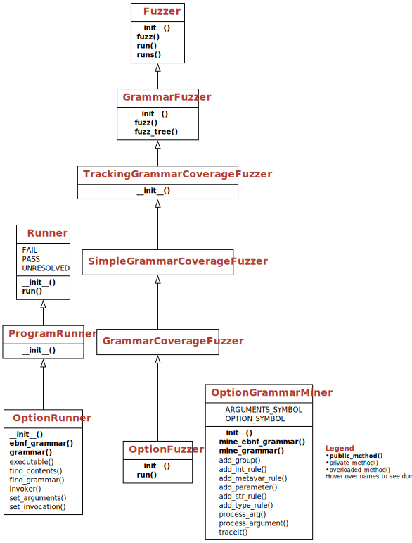

Testing Configurations#
The behavior of a program is not only governed by its data. The configuration of a program – that is, the settings that govern the execution of a program on its (regular) input data, as set by options or configuration files – just as well influences behavior, and thus can and should be tested. In this chapter, we explore how to systematically test and cover software configurations. By automatically inferring configuration options, we can apply these techniques out of the box, with no need for writing a grammar. Finally, we show how to systematically cover combinations of configuration options, quickly detecting unwanted interferences.
from bookutils import YouTubeVideo
YouTubeVideo('L0ztoXVru2U')
Prerequisites
You should have read the chapter on grammars.
You should have read the chapter on grammar coverage.
import bookutils.setup
from typing import List, Union, Optional, Callable, Type
Synopsis#
To use the code provided in this chapter, write
>>> from fuzzingbook.ConfigurationFuzzer import <identifier>
and then make use of the following features.
This chapter provides two classes:
OptionRunnerautomatically extract command-line options from a Python program;OptionFuzzeruses these to automatically test a Python program with a large variety of options.
OptionRunner runs a program up to the point where it parses its arguments, and then extracts a grammar that describes its invocations:
>>> autopep8_runner = OptionRunner("autopep8", "foo.py")
The grammar can be extracted via the method ebnf_grammar():
>>> option_ebnf_grammar = autopep8_runner.ebnf_grammar()
>>> option_ebnf_grammar
{'<start>': ['(<option>)*<arguments>'],
'<option>': [' -h',
' --help',
' --version',
' -v',
' --verbose',
' -d',
' --diff',
' -i',
' --in-place',
' --global-config <filename>',
' --ignore-local-config',
' -r',
' --recursive',
' -j <n>',
' --jobs <n>',
' -p <n>',
' --pep8-passes <n>',
' -a',
' --aggressive',
' --experimental',
' --exclude <globs>',
' --list-fixes',
' --ignore <errors>',
' --select <errors>',
' --max-line-length <n>',
' --line-range <line> <line>',
' --range <line> <line>',
' --indent-size <int>',
' --hang-closing',
' --exit-code'],
'<arguments>': [' foo.py'],
'<str>': ['<char>+'],
'<char>': ['0',
'1',
'2',
'3',
'4',
'5',
'6',
'7',
'8',
'9',
'a',
'b',
'c',
'd',
'e',
'f',
'g',
'h',
'i',
'j',
'k',
'l',
'm',
'n',
'o',
'p',
'q',
'r',
's',
't',
'u',
'v',
'w',
'x',
'y',
'z',
'A',
'B',
'C',
'D',
'E',
'F',
'G',
'H',
'I',
'J',
'K',
'L',
'M',
'N',
'O',
'P',
'Q',
'R',
'S',
'T',
'U',
'V',
'W',
'X',
'Y',
'Z',
'!',
'"',
'#',
'$',
'%',
'&',
"'",
'(',
')',
'*',
'+',
',',
'-',
'.',
'/',
':',
';',
'<',
'=',
'>',
'?',
'@',
'[',
'\\',
']',
'^',
'_',
'`',
'{',
'|',
'}',
'~'],
'<filename>': ['<str>'],
'<int>': ['(-)?<digit>+'],
'<digit>': ['0', '1', '2', '3', '4', '5', '6', '7', '8', '9'],
'<n>': ['<int>'],
'<globs>': ['<str>'],
'<errors>': ['<str>'],
'<line>': ['<int>']}
The grammar can be immediately used for fuzzing. A GrammarCoverageFuzzer will ensure all options are covered:
>>> from Grammars import convert_ebnf_grammar
>>> fuzzer = GrammarCoverageFuzzer(convert_ebnf_grammar(option_ebnf_grammar))
>>> [fuzzer.fuzz() for i in range(3)]
[' --max-line-length -64 foo.py',
" -a --version --select u --diff --list-fixes -r --range -50 3 --ignore iq --hang-closing --ignore-local-config --aggressive --in-place --indent-size 9 -d --global-config wQ --help --line-range -8226 7 -j 1 -p 2 -h --experimental -i -v --jobs -81 --exclude c --exit-code --verbose --recursive --exclude j --pep8-passes 587 --global-config 5ty --global-config W]96{< --ignore M --exclude . --select > --global-config T --ignore z'C --select %EIL -r -a -v foo.py",
' --exclude VKSl --exclude 3[ --global-config ^0x --ignore 4 --exclude _ --global-config 7 --select mh --global-config e --global-config R --global-config JH\\ --exclude OP --ignore = --global-config @ --select ?N --global-config s --select *}v --ignore - --select Do,GA --exclude bkn --ignore U --exclude | --global-config 2 --exclude 8 --select " --exclude pZ --select / --exclude f(aYdg) --select : --global-config ~ --global-config ! --global-config 1B`$X --exclude ; --select F --select & --ignore r --exclude #+ --exit-code --aggressive --select ?/ -p -6 --version --ignore-local-config -r -v foo.py']
The OptionFuzzer class summarizes these steps. Its constructor takes an OptionRunner to automatically extract the grammar; it does the necessary steps to extract the grammar and fuzz with it.
>>> autopep8_runner = OptionRunner("autopep8", "foo.py")
>>> autopep8_fuzzer = OptionFuzzer(autopep8_runner)
>>> [autopep8_fuzzer.fuzz() for i in range(3)]
[' --version foo.py',
' --ignore Rj --jobs -6 --line-range -04 7953 --help --aggressive -v --ignore-local-config -h --experimental -r --global-config 3 --indent-size -8 --exclude ;&M"! -a -p 1 --hang-closing -j 263 --verbose --recursive --in-place --list-fixes --select t@fs --range -0 7 -d --pep8-passes 7 --diff -i --exit-code --max-line-length -3 --global-config L --select u| --global-config \' --global-config r --exclude Ik) --ignore D- --ignore 4 --select XS --global-config 7 --ignore ~. --ignore e9 --exclude ph --ignore U --global-config dz --global-config Q$o --exclude 6( --ignore x --select 5J:N --exclude < --ignore O --global-config ,c --global-config = --exclude W\\ --global-config ? --select l --select ^ --select V --exclude P --select Z --select >0 --select TH --exclude * --exclude G --select 8 --global-config bn --global-config C{a1m --exclude F --ignore _ --ignore g --ignore ]q --exclude wy --ignore % --global-config v --ignore + --global-config EK/ --ignore [#}Y --global-config `i --global-config 2 --ignore BE --global-config A --indent-size -22 --recursive --hang-closing --exclude ` --indent-size -61 --diff -a foo.py',
' foo.py']
The final step in testing would now to invoke the program with these arguments.
Note that OptionRunner is experimental: It assumes that the Python program in question uses the argparse module; and not all argparse features are supported. Still, it does a pretty good job even on nontrivial programs.
The OptionRunner constructor accepts an additional miner keyword parameter, which takes the class of the argument grammar miner to be used. By default, this is OptionGrammarMiner – a helper class that can be used (and extended) to create own option grammar miners.

Configuration Options#
When we talk about the input to a program, we usually think of the data it processes. This is also what we have been fuzzing in the past chapters – be it with random input, mutation-based fuzzing, or grammar-based fuzzing. However, programs typically have several input sources, all of which can and should be tested – and included in test generation.
One important source of input is the program’s configuration – that is, a set of inputs that typically is set once when beginning to process data and then stays constant while processing data, while the program is running, or even while the program is deployed. Such a configuration is frequently set in configuration files (for instance, as key/value pairs); the most ubiquitous method for command-line tools, though, are configuration options on the command line.
As an example, consider the grep utility to find textual patterns in files. The exact mode by which grep works is governed by a multitude of options, which can be listed by providing a --help option:
!grep --help
usage: grep [-abcdDEFGHhIiJLlMmnOopqRSsUVvwXxZz] [-A num] [-B num] [-C[num]]
[-e pattern] [-f file] [--binary-files=value] [--color=when]
[--context[=num]] [--directories=action] [--label] [--line-buffered]
[--null] [pattern] [file ...]
All these options need to be tested for whether they operate correctly. In security testing, any such option may also trigger a yet unknown vulnerability. Hence, such options can become fuzz targets on their own. In this chapter, we analyze how to systematically test such options – and better yet, how to extract possible configurations right out of given program files, such that we do not have to specify anything.
Options in Python#
Let us stick to our common programming language here and examine how options are processed in Python. The argparse module provides a parser for command-line arguments (and options) with great functionality – and great complexity. You start by defining a parser (argparse.ArgumentParser()) to which individual arguments with various features are added, one after another. Additional parameters for each argument can specify the type (type) of the argument (say, integers or strings), or the number of arguments (nargs).
By default, arguments are stored under their name in the args object coming from parse_args() – thus, args.integers holds the integer arguments added earlier. Special actions (actions) allow storing specific values in given variables; the store_const action stores the given const in the attribute named by dest. The following example takes a number of integer arguments (integers) as well as an operator (--sum, --min, or --max) to be applied on these integers. The operators all store a function reference in the accumulate attribute, which is finally invoked on the integers parsed:
import argparse
def process_numbers(args=[]):
parser = argparse.ArgumentParser(description='Process some integers.')
parser.add_argument('integers', metavar='N', type=int, nargs='+',
help='an integer for the accumulator')
group = parser.add_mutually_exclusive_group(required=True)
group.add_argument('--sum', dest='accumulate', action='store_const',
const=sum,
help='sum the integers')
group.add_argument('--min', dest='accumulate', action='store_const',
const=min,
help='compute the minimum')
group.add_argument('--max', dest='accumulate', action='store_const',
const=max,
help='compute the maximum')
args = parser.parse_args(args)
print(args.accumulate(args.integers))
Here’s how process_numbers() works. We can, for instance, invoke the --min option on the given arguments to compute the minimum:
process_numbers(["--min", "100", "200", "300"])
100
Or compute the sum of three numbers:
process_numbers(["--sum", "1", "2", "3"])
6
When defined via add_mutually_exclusive_group() (as above), options are mutually exclusive. Consequently, we can have only one operator:
import bookutils.setup
from ExpectError import ExpectError
with ExpectError(SystemExit, print_traceback=False):
process_numbers(["--sum", "--max", "1", "2", "3"])
usage: ipykernel_launcher.py [-h] (--sum | --min | --max) N [N ...]
ipykernel_launcher.py: error: argument --max: not allowed with argument --sum
SystemExit: 2 (expected)
A Grammar for Configurations#
How can we test a system with several options? The easiest answer is to write a grammar for it. The grammar PROCESS_NUMBERS_EBNF_GRAMMAR reflects the possible combinations of options and arguments:
from Grammars import crange, srange, convert_ebnf_grammar, extend_grammar, is_valid_grammar
from Grammars import START_SYMBOL, new_symbol, Grammar
PROCESS_NUMBERS_EBNF_GRAMMAR: Grammar = {
"<start>": ["<operator> <integers>"],
"<operator>": ["--sum", "--min", "--max"],
"<integers>": ["<integer>", "<integers> <integer>"],
"<integer>": ["<digit>+"],
"<digit>": crange('0', '9')
}
assert is_valid_grammar(PROCESS_NUMBERS_EBNF_GRAMMAR)
PROCESS_NUMBERS_GRAMMAR = convert_ebnf_grammar(PROCESS_NUMBERS_EBNF_GRAMMAR)
We can feed this grammar into our grammar coverage fuzzer and have it cover one option after another:
from GrammarCoverageFuzzer import GrammarCoverageFuzzer
f = GrammarCoverageFuzzer(PROCESS_NUMBERS_GRAMMAR, min_nonterminals=10)
for i in range(3):
print(f.fuzz())
--max 9 5 8 210 80 9756431
--sum 9 4 99 1245 612370
--min 2 3 0 46 15798 7570926
Of course, we can also invoke process_numbers() with these very arguments. To this end, we need to convert the string produced by the grammar back into a list of individual arguments, using split():
f = GrammarCoverageFuzzer(PROCESS_NUMBERS_GRAMMAR, min_nonterminals=10)
for i in range(3):
args = f.fuzz().split()
print(args)
process_numbers(args)
['--max', '8', '9', '3067', '44', '13852967057']
13852967057
['--sum', '9', '8', '63', '9278111', '59206197798']
59215475989
['--min', '4', '1', '4864', '33342', '7827970808951']
1
Similarly, we can define grammars for any program to be tested; as well as define grammars for, say, configuration files. Yet, the grammar has to be updated with every change to the program, which creates a maintenance burden. Given that the information required for the grammar is already all encoded in the program, the question arises: Can’t we go and extract configuration options right out of the program in the first place?
Mining Configuration Options#
In this section, we try to extract option and argument information right out of a program, such that we do not have to specify a configuration grammar. The aim is to have a configuration fuzzer that works on the options and arguments of an arbitrary program, as long as it follows specific conventions for processing its arguments. In the case of Python programs, this means using the argparse module.
Our idea is as follows: We execute the given program up to the point where the arguments are actually parsed – that is, argparse.parse_args() is invoked. Up to this point, we track all calls into the argument parser, notably those calls that define arguments and options (add_argument()). From these, we construct the grammar.
Tracking Arguments#
Let us illustrate this approach with a simple experiment: We define a trace function (see our chapter on coverage for details) that is active while process_numbers is invoked. If we have a call to a method add_argument, we access and print out the local variables (which at this point are the arguments to the method).
import sys
import string
def trace_locals(frame, event, arg):
if event != "call":
return
method_name = frame.f_code.co_name
if method_name != "add_argument":
return
locals = frame.f_locals
print(method_name, locals)
What we get is a list of all calls to add_argument(), together with the method arguments passed:
sys.settrace(trace_locals)
process_numbers(["--sum", "1", "2", "3"])
sys.settrace(None)
add_argument {'self': ArgumentParser(prog='ipykernel_launcher.py', usage=None, description='Process some integers.', formatter_class=<class 'argparse.HelpFormatter'>, conflict_handler='error', add_help=True), 'args': ('-h', '--help'), 'kwargs': {'action': 'help', 'default': '==SUPPRESS==', 'help': 'show this help message and exit'}}
add_argument {'self': ArgumentParser(prog='ipykernel_launcher.py', usage=None, description='Process some integers.', formatter_class=<class 'argparse.HelpFormatter'>, conflict_handler='error', add_help=True), 'args': ('integers',), 'kwargs': {'metavar': 'N', 'type': <class 'int'>, 'nargs': '+', 'help': 'an integer for the accumulator'}}
add_argument {'self': <argparse._MutuallyExclusiveGroup object at 0x11142f260>, 'args': ('--sum',), 'kwargs': {'dest': 'accumulate', 'action': 'store_const', 'const': <built-in function sum>, 'help': 'sum the integers'}}
add_argument {'self': <argparse._MutuallyExclusiveGroup object at 0x11142f260>, 'args': ('--min',), 'kwargs': {'dest': 'accumulate', 'action': 'store_const', 'const': <built-in function min>, 'help': 'compute the minimum'}}
add_argument {'self': <argparse._MutuallyExclusiveGroup object at 0x11142f260>, 'args': ('--max',), 'kwargs': {'dest': 'accumulate', 'action': 'store_const', 'const': <built-in function max>, 'help': 'compute the maximum'}}
6
From the args argument, we can access the individual options and arguments to be defined:
def trace_options(frame, event, arg):
if event != "call":
return
method_name = frame.f_code.co_name
if method_name != "add_argument":
return
locals = frame.f_locals
print(locals['args'])
sys.settrace(trace_options)
process_numbers(["--sum", "1", "2", "3"])
sys.settrace(None)
('-h', '--help')
('integers',)
('--sum',)
('--min',)
('--max',)
6
We see that each argument comes as a tuple with one (say, integers or --sum) or two members (-h and --help), which denote alternate forms for the same option. Our job will be to go through the arguments of add_arguments() and detect not only the names of options and arguments, but also whether they accept additional parameters, as well as the type of the parameters.
A Grammar Miner for Options and Arguments#
Let us now build a class that gathers all this information to create a grammar.
We use the ParseInterrupt exception to interrupt program execution after gathering all arguments and options:
class ParseInterrupt(Exception):
pass
The class OptionGrammarMiner takes an executable function for which the grammar of options and arguments is to be mined:
class OptionGrammarMiner:
"""Helper class for extracting option grammars"""
def __init__(self, function: Callable, log: bool = False):
"""Constructor.
`function` - a function processing arguments using argparse()
`log` - output diagnostics if True
"""
self.function = function
self.log = log
The method mine_ebnf_grammar() is where everything happens. It creates a grammar of the form
<start> ::= <option>* <arguments>
<option> ::= <empty>
<arguments> ::= <empty>
in which the options and arguments will be collected. It then sets a trace function (see our chapter on coverage for details) that is active while the previously defined function is invoked. Raising ParseInterrupt (when parse_args() is invoked) ends execution.
class OptionGrammarMiner(OptionGrammarMiner):
OPTION_SYMBOL = "<option>"
ARGUMENTS_SYMBOL = "<arguments>"
def mine_ebnf_grammar(self):
"""Extract EBNF option grammar"""
self.grammar = {
START_SYMBOL: ["(" + self.OPTION_SYMBOL + ")*" + self.ARGUMENTS_SYMBOL],
self.OPTION_SYMBOL: [],
self.ARGUMENTS_SYMBOL: []
}
self.current_group = self.OPTION_SYMBOL
old_trace = sys.gettrace()
sys.settrace(self.traceit)
try:
self.function()
except ParseInterrupt:
pass
sys.settrace(old_trace)
return self.grammar
def mine_grammar(self):
"""Extract BNF option grammar"""
return convert_ebnf_grammar(self.mine_ebnf_grammar())
The trace function checks for four methods: add_argument() is the most important function, resulting in processing arguments; frame.f_locals again is the set of local variables, which at this point is mostly the arguments to add_argument(). Since mutually exclusive groups also have a method add_argument(), we set the flag in_group to differentiate.
Note that we make no specific efforts to differentiate between multiple parsers or groups; we simply assume that there is one parser, and at any point at most one mutually exclusive group.
class OptionGrammarMiner(OptionGrammarMiner):
def traceit(self, frame, event, arg):
if event != "call":
return
if "self" not in frame.f_locals:
return
self_var = frame.f_locals["self"]
method_name = frame.f_code.co_name
if method_name == "add_argument":
in_group = repr(type(self_var)).find("Group") >= 0
self.process_argument(frame.f_locals, in_group)
elif method_name == "add_mutually_exclusive_group":
self.add_group(frame.f_locals, exclusive=True)
elif method_name == "add_argument_group":
# self.add_group(frame.f_locals, exclusive=False)
pass
elif method_name == "parse_args":
raise ParseInterrupt
return self.traceit
The process_arguments() now analyzes the arguments passed and adds them to the grammar:
If the argument starts with
-, it gets added as an optional element to the<option>listOtherwise, it gets added to the
<argument>list.
The optional nargs argument specifies how many arguments can follow. If it is a number, we add the appropriate number of elements to the grammar; if it is an abstract specifier (say, + or *), we use it directly as EBNF operator.
Given the large number of parameters and optional behavior, this is a somewhat messy function, but it does the job.
class OptionGrammarMiner(OptionGrammarMiner):
def process_argument(self, locals, in_group):
args = locals["args"]
kwargs = locals["kwargs"]
if self.log:
print(args)
print(kwargs)
print()
for arg in args:
self.process_arg(arg, in_group, kwargs)
class OptionGrammarMiner(OptionGrammarMiner):
def process_arg(self, arg, in_group, kwargs):
if arg.startswith('-'):
if not in_group:
target = self.OPTION_SYMBOL
else:
target = self.current_group
metavar = None
arg = " " + arg
else:
target = self.ARGUMENTS_SYMBOL
metavar = arg
arg = ""
if "nargs" in kwargs:
nargs = kwargs["nargs"]
else:
nargs = 1
param = self.add_parameter(kwargs, metavar)
if param == "":
nargs = 0
if isinstance(nargs, int):
for i in range(nargs):
arg += param
else:
assert nargs in "?+*"
arg += '(' + param + ')' + nargs
if target == self.OPTION_SYMBOL:
self.grammar[target].append(arg)
else:
self.grammar[target].append(arg)
The method add_parameter() handles possible parameters of options. If the argument has an action defined, it takes no parameter. Otherwise, we identify the type of the parameter (as int or str) and augment the grammar with an appropriate rule.
import inspect
class OptionGrammarMiner(OptionGrammarMiner):
def add_parameter(self, kwargs, metavar):
if "action" in kwargs:
# No parameter
return ""
type_ = "str"
if "type" in kwargs:
given_type = kwargs["type"]
# int types come as '<class int>'
if inspect.isclass(given_type) and issubclass(given_type, int):
type_ = "int"
if metavar is None:
if "metavar" in kwargs:
metavar = kwargs["metavar"]
else:
metavar = type_
self.add_type_rule(type_)
if metavar != type_:
self.add_metavar_rule(metavar, type_)
param = " <" + metavar + ">"
return param
The method add_type_rule() adds a rule for parameter types to the grammar. If the parameter is identified by a meta-variable (say, N), we add a rule for this as well to improve legibility.
class OptionGrammarMiner(OptionGrammarMiner):
def add_type_rule(self, type_):
if type_ == "int":
self.add_int_rule()
else:
self.add_str_rule()
def add_int_rule(self):
self.grammar["<int>"] = ["(-)?<digit>+"]
self.grammar["<digit>"] = crange('0', '9')
def add_str_rule(self):
self.grammar["<str>"] = ["<char>+"]
self.grammar["<char>"] = srange(
string.digits
+ string.ascii_letters
+ string.punctuation)
def add_metavar_rule(self, metavar, type_):
self.grammar["<" + metavar + ">"] = ["<" + type_ + ">"]
The method add_group() adds a new mutually exclusive group to the grammar. We define a new symbol (say, <group>) for the options added to the group, and use the required and exclusive flags to define an appropriate expansion operator. The group is then prefixed to the grammar, as in
<start> ::= <group><option>* <arguments>
<group> ::= <empty>
and filled with the next calls to add_argument() within the group.
class OptionGrammarMiner(OptionGrammarMiner):
def add_group(self, locals, exclusive):
kwargs = locals["kwargs"]
if self.log:
print(kwargs)
required = kwargs.get("required", False)
group = new_symbol(self.grammar, "<group>")
if required and exclusive:
group_expansion = group
if required and not exclusive:
group_expansion = group + "+"
if not required and exclusive:
group_expansion = group + "?"
if not required and not exclusive:
group_expansion = group + "*"
self.grammar[START_SYMBOL][0] = group_expansion + \
self.grammar[START_SYMBOL][0]
self.grammar[group] = []
self.current_group = group
That’s it! With this, we can now extract the grammar from our process_numbers() program. Turning on logging again reveals the variables we draw upon.
miner = OptionGrammarMiner(process_numbers, log=True)
process_numbers_grammar = miner.mine_ebnf_grammar()
('-h', '--help')
{'action': 'help', 'default': '==SUPPRESS==', 'help': 'show this help message and exit'}
('integers',)
{'metavar': 'N', 'type': <class 'int'>, 'nargs': '+', 'help': 'an integer for the accumulator'}
{'required': True}
('--sum',)
{'dest': 'accumulate', 'action': 'store_const', 'const': <built-in function sum>, 'help': 'sum the integers'}
('--min',)
{'dest': 'accumulate', 'action': 'store_const', 'const': <built-in function min>, 'help': 'compute the minimum'}
('--max',)
{'dest': 'accumulate', 'action': 'store_const', 'const': <built-in function max>, 'help': 'compute the maximum'}
Here is the extracted grammar:
process_numbers_grammar
{'<start>': ['<group>(<option>)*<arguments>'],
'<option>': [' -h', ' --help'],
'<arguments>': ['( <integers>)+'],
'<int>': ['(-)?<digit>+'],
'<digit>': ['0', '1', '2', '3', '4', '5', '6', '7', '8', '9'],
'<integers>': ['<int>'],
'<group>': [' --sum', ' --min', ' --max']}
The grammar properly identifies the group found:
process_numbers_grammar["<start>"]
['<group>(<option>)*<arguments>']
process_numbers_grammar["<group>"]
[' --sum', ' --min', ' --max']
It also identifies a --help option provided not by us, but by the argparse module:
process_numbers_grammar["<option>"]
[' -h', ' --help']
The grammar also correctly identifies the types of the arguments:
process_numbers_grammar["<arguments>"]
['( <integers>)+']
process_numbers_grammar["<integers>"]
['<int>']
The rules for int are set as defined by add_int_rule()
process_numbers_grammar["<int>"]
['(-)?<digit>+']
We can take this grammar and convert it to BNF, such that we can fuzz with it right away:
assert is_valid_grammar(process_numbers_grammar)
grammar = convert_ebnf_grammar(process_numbers_grammar)
assert is_valid_grammar(grammar)
f = GrammarCoverageFuzzer(grammar)
for i in range(10):
print(f.fuzz())
--sum 9
--max -h --help --help -16 -0
--min --help 2745341 8
--min 1 27
--sum --help --help -2
--sum --help 0 3 -77
--sum -3
--sum --help 429 8 10 0295 -694 1
--max -h 91 -1425 99
--sum -795 -94 8 -44
Each and every invocation adheres to the rules as set forth in the argparse calls. By mining options and arguments from existing programs, we can now fuzz these options out of the box – without having to specify a grammar.
Testing Autopep8#
Let us try out the option grammar miner on real-world Python programs. autopep8 is a tool that automatically converts Python code to the PEP 8 Style Guide for Python Code. (Actually, all Python code in this book runs through autopep8 during production.) autopep8 offers a wide range of options, as can be seen by invoking it with --help:
!autopep8 --help
usage: autopep8 [-h] [--version] [-v] [-d] [-i] [--global-config filename]
[--ignore-local-config] [-r] [-j n] [-p n] [-a]
[--experimental] [--exclude globs] [--list-fixes]
[--ignore errors] [--select errors] [--max-line-length n]
[--line-range line line] [--hang-closing] [--exit-code]
[files ...]
Automatically formats Python code to conform to the PEP 8 style guide.
positional arguments:
files files to format or '-' for standard in
options:
-h, --help show this help message and exit
--version show program's version number and exit
-v, --verbose print verbose messages; multiple -v result in more
verbose messages
-d, --diff print the diff for the fixed source
-i, --in-place make changes to files in place
--global-config filename
path to a global pep8 config file; if this file does
not exist then this is ignored (default:
/Users/zeller/.config/pep8)
--ignore-local-config
don't look for and apply local config files; if not
passed, defaults are updated with any config files in
the project's root directory
-r, --recursive run recursively over directories; must be used with
--in-place or --diff
-j n, --jobs n number of parallel jobs; match CPU count if value is
less than 1
-p n, --pep8-passes n
maximum number of additional pep8 passes (default:
infinite)
-a, --aggressive enable non-whitespace changes; multiple -a result in
more aggressive changes
--experimental enable experimental fixes
--exclude globs exclude file/directory names that match these comma-
separated globs
--list-fixes list codes for fixes; used by --ignore and --select
--ignore errors do not fix these errors/warnings (default:
E226,E24,W50,W690)
--select errors fix only these errors/warnings (e.g. E4,W)
--max-line-length n set maximum allowed line length (default: 79)
--line-range line line, --range line line
only fix errors found within this inclusive range of
line numbers (e.g. 1 99); line numbers are indexed at
1
--hang-closing hang-closing option passed to pycodestyle
--exit-code change to behavior of exit code. default behavior of
return value, 0 is no differences, 1 is error exit.
return 2 when add this option. 2 is exists
differences.
Autopep8 Setup#
We want to systematically test these options. In order to deploy our configuration grammar miner, we need to find the source code of the executable:
import os
def find_executable(name):
for path in os.get_exec_path():
qualified_name = os.path.join(path, name)
if os.path.exists(qualified_name):
return qualified_name
return None
autopep8_executable = find_executable("autopep8")
assert autopep8_executable is not None
autopep8_executable
'/Users/zeller/.pyenv/versions/3.10.2/bin/autopep8'
Next, we build a function that reads the contents of the file and executes it.
def autopep8():
executable = find_executable("autopep8")
# First line has to contain "/usr/bin/env python" or like
first_line = open(executable).readline()
assert first_line.find("python") >= 0
contents = open(executable).read()
exec(contents)
Mining an Autopep8 Grammar#
We can use the autopep8() function in our grammar miner:
autopep8_miner = OptionGrammarMiner(autopep8)
and extract a grammar for it:
autopep8_ebnf_grammar = autopep8_miner.mine_ebnf_grammar()
This works because here, autopep8 is not a separate process (and a separate Python interpreter), but we run the autopep8() function (and the autopep8 code) in our current Python interpreter – up to the call to parse_args(), where we interrupt execution again. At this point, the autopep8 code has done nothing but setting up the argument parser – which is what we are interested in.
The grammar options mined reflect precisely the options seen when providing --help:
print(autopep8_ebnf_grammar["<option>"])
[' -h', ' --help', ' --version', ' -v', ' --verbose', ' -d', ' --diff', ' -i', ' --in-place', ' --global-config <filename>', ' --ignore-local-config', ' -r', ' --recursive', ' -j <n>', ' --jobs <n>', ' -p <n>', ' --pep8-passes <n>', ' -a', ' --aggressive', ' --experimental', ' --exclude <globs>', ' --list-fixes', ' --ignore <errors>', ' --select <errors>', ' --max-line-length <n>', ' --line-range <line> <line>', ' --range <line> <line>', ' --indent-size <int>', ' --hang-closing', ' --exit-code']
Metavariables like <n> or <line> are placeholders for integers. We assume all metavariables of the same name have the same type:
autopep8_ebnf_grammar["<line>"]
['<int>']
The grammar miner has inferred that the argument to autopep8 is a list of files:
autopep8_ebnf_grammar["<arguments>"]
['( <files>)*']
which in turn all are strings:
autopep8_ebnf_grammar["<files>"]
['<str>']
As we are only interested in testing options, not arguments, we fix the arguments to a single mandatory input. (Otherwise, we’d have plenty of random file names generated.)
autopep8_ebnf_grammar["<arguments>"] = [" <files>"]
autopep8_ebnf_grammar["<files>"] = ["foo.py"]
assert is_valid_grammar(autopep8_ebnf_grammar)
Creating Autopep8 Options#
Let us now use the inferred grammar for fuzzing. Again, we convert the EBNF grammar into a regular BNF grammar:
autopep8_grammar = convert_ebnf_grammar(autopep8_ebnf_grammar)
assert is_valid_grammar(autopep8_grammar)
And we can use the grammar for fuzzing all options:
f = GrammarCoverageFuzzer(autopep8_grammar, max_nonterminals=4)
for i in range(20):
print(f.fuzz())
-r foo.py
-h --experimental --hang-closing foo.py
--list-fixes -v foo.py
--aggressive -d foo.py
--indent-size 9 --help foo.py
--exit-code --recursive foo.py
--diff --version -i foo.py
--max-line-length 0 --in-place --verbose foo.py
--ignore-local-config -a foo.py
--select x -i --exit-code foo.py
-j 8 --diff foo.py
-d -v -d foo.py
-p 6 -i foo.py
-v --diff foo.py
--ignore uA --recursive foo.py
--jobs 5 -r foo.py
--range 4 1 foo.py
--ignore-local-config -i foo.py
-r --exit-code foo.py
-v -r foo.py
Let us apply these options on the actual program. We need a file foo.py that will serve as input: (Note that the following commands will overwrite the file foo.py, if it already exists in the current working directory. Be aware of this, if you downloaded the notebooks and are working locally.)
def create_foo_py():
open("foo.py", "w").write("""
def twice(x = 2):
return x + x
""")
create_foo_py()
print(open("foo.py").read(), end="")
def twice(x = 2):
return x + x
We see how autopep8 fixes the spacing:
!autopep8 foo.py
def twice(x=2):
return x + x
Let us now put things together. We define a ProgramRunner that will run the autopep8 executable with arguments coming from the mined autopep8 grammar.
from Fuzzer import ProgramRunner
Running autopep8 with the mined options reveals a surprisingly high number of passing runs. (We see that some options depend on each other or are mutually exclusive, but this is handled by the program logic, not the argument parser, and hence out of our scope.) The GrammarCoverageFuzzer ensures that each option is tested at least once. (Digits and letters, too, by the way.)
f = GrammarCoverageFuzzer(autopep8_grammar, max_nonterminals=5)
for i in range(20):
invocation = "autopep8" + f.fuzz()
print("$ " + invocation)
args = invocation.split()
autopep8_runner = ProgramRunner(args)
result, outcome = autopep8_runner.run()
if result.stderr != "":
print(result.stderr, end="")
$ autopep8 foo.py
$ autopep8 --diff --max-line-length 4 --exit-code --range 5 8 -p 2 foo.py
$ autopep8 --ignore z --verbose -r --list-fixes foo.py
--recursive must be used with --in-place or --diff$ autopep8 --exclude 5 -h -i --aggressive --in-place foo.py
$ autopep8 --select a --help --experimental foo.py
$ autopep8 --indent-size -30 --recursive foo.py
--recursive must be used with --in-place or --diff$ autopep8 --global-config < -j 9 -v -a foo.py
parallel jobs requires --in-place$ autopep8 --line-range 7 1 --hang-closing -d foo.py
First value of --range should be less than or equal to the second$ autopep8 --pep8-passes 6 --hang-closing --version --ignore-local-config foo.py
$ autopep8 --jobs -2 --experimental --version foo.py
$ autopep8 --ignore Y: --select ! --global-config e foo.py
$ autopep8 --select 1 -a --recursive --aggressive foo.py
--recursive must be used with --in-place or --diff$ autopep8 --ignore * --ignore `0 --global-config _ --verbose foo.py
[file:foo.py]
---> Applying global fix for E265
---> 5 issue(s) to fix {'E251': {2}, 'E271': {3}, 'E221': {3}, 'E222': {3}}
---> 3 issue(s) to fix {'E251': {2}, 'E221': {3}, 'E222': {3}}
---> 1 issue(s) to fix {'E222': {3}}
---> 0 issue(s) to fix {}
$ autopep8 --global-config ,\ --exclude r -v foo.py
[file:foo.py]
---> Applying global fix for E265
---> 5 issue(s) to fix {'E251': {2}, 'E271': {3}, 'E221': {3}, 'E222': {3}}
---> 3 issue(s) to fix {'E251': {2}, 'E221': {3}, 'E222': {3}}
---> 1 issue(s) to fix {'E222': {3}}
---> 0 issue(s) to fix {}
$ autopep8 --global-config xd6M --recursive foo.py
--recursive must be used with --in-place or --diff$ autopep8 --select R --exclude L --version --ignore-local-config foo.py
$ autopep8 --select " --verbose -h -d foo.py
$ autopep8 --diff -i -h foo.py
$ autopep8 --in-place --select w --version -i foo.py
$ autopep8 --ignore 49 --exclude lI -i foo.py
Our foo.py file now has been formatted in place a number of times:
print(open("foo.py").read(), end="")
def twice(x=2):
return x + x
We don’t need it anymore, so we clean up things:
import os
os.remove("foo.py")
Classes for Fuzzing Configuration Options#
Let us now create reusable classes that we can use for testing arbitrary programs. (Okay, make that “arbitrary programs that are written in Python and use the argparse module to process command-line arguments.”)
The class OptionRunner is a subclass of ProgramRunner that takes care of automatically determining the grammar, using the same steps we used for autopep8, above.
from Grammars import unreachable_nonterminals
class OptionRunner(ProgramRunner):
"""Run a program while determining its option grammar"""
def __init__(self, program: Union[str, List[str]],
arguments: Optional[str] = None, *,
log: bool = False,
miner_class: Optional[Type[OptionGrammarMiner]] = None):
"""Constructor.
`program` - the (Python) program to be executed
`arguments` - an (optional) string with arguments for `program`
`log` - if True, enable logging in miner
`miner_class` - the `OptionGrammarMiner` class to be used
(default: `OptionGrammarMiner`)
"""
if isinstance(program, str):
self.base_executable = program
else:
self.base_executable = program[0]
if miner_class is None:
miner_class = OptionGrammarMiner
self.miner_class = miner_class
self.log = log
self.find_contents()
self.find_grammar()
if arguments is not None:
self.set_arguments(arguments)
super().__init__(program)
First, we find the contents of the Python executable:
class OptionRunner(OptionRunner):
def find_contents(self):
self._executable = find_executable(self.base_executable)
if self._executable is None:
raise IOError(self.base_executable + ": not found")
first_line = open(self._executable).readline()
if first_line.find("python") < 0:
raise IOError(self.base_executable + ": not a Python executable")
self.contents = open(self._executable).read()
def invoker(self):
# We are passing the local variables as is, such that we can access `self`
# We set __name__ to '__main__' to invoke the script as an executable
exec(self.contents, {'__name__': '__main__'})
def executable(self):
return self._executable
Next, we determine the grammar using the OptionGrammarMiner class:
class OptionRunner(OptionRunner):
def find_grammar(self):
miner = self.miner_class(self.invoker, log=self.log)
self._ebnf_grammar = miner.mine_ebnf_grammar()
def ebnf_grammar(self):
"""Return extracted grammar in EBNF form"""
return self._ebnf_grammar
def grammar(self):
"""Return extracted grammar in BNF form"""
return convert_ebnf_grammar(self._ebnf_grammar)
The two service methods set_arguments() and set_invocation() help us to change the arguments and program, respectively.
class OptionRunner(OptionRunner):
def set_arguments(self, args):
self._ebnf_grammar["<arguments>"] = [" " + args]
# Delete rules for previous arguments
for nonterminal in unreachable_nonterminals(self._ebnf_grammar):
del self._ebnf_grammar[nonterminal]
def set_invocation(self, program):
self.program = program
We can instantiate the class on autopep8 and immediately get the grammar:
autopep8_runner = OptionRunner("autopep8", "foo.py")
print(autopep8_runner.ebnf_grammar()["<option>"])
[' -h', ' --help', ' --version', ' -v', ' --verbose', ' -d', ' --diff', ' -i', ' --in-place', ' --global-config <filename>', ' --ignore-local-config', ' -r', ' --recursive', ' -j <n>', ' --jobs <n>', ' -p <n>', ' --pep8-passes <n>', ' -a', ' --aggressive', ' --experimental', ' --exclude <globs>', ' --list-fixes', ' --ignore <errors>', ' --select <errors>', ' --max-line-length <n>', ' --line-range <line> <line>', ' --range <line> <line>', ' --indent-size <int>', ' --hang-closing', ' --exit-code']
An OptionFuzzer interacts with the given OptionRunner to obtain its grammar, which is then passed to its GrammarCoverageFuzzer superclass.
class OptionFuzzer(GrammarCoverageFuzzer):
"""Fuzz a (Python) program using its arguments"""
def __init__(self, runner: OptionRunner, *args, **kwargs):
"""Constructor. `runner` is an OptionRunner."""
assert issubclass(type(runner), OptionRunner)
self.runner = runner
grammar = runner.grammar()
super().__init__(grammar, *args, **kwargs)
When invoking run(), the OptionFuzzer creates a new invocation (using fuzz() from its grammar) and runs the now given (or previously set) runner with the arguments from the grammar. Note that the runner specified in run() can differ from the one set during initialization; this allows for mining options from one program and applying it in another context.
class OptionFuzzer(OptionFuzzer):
def run(self, runner=None, inp=""):
if runner is None:
runner = self.runner
assert issubclass(type(runner), OptionRunner)
invocation = runner.executable() + " " + self.fuzz()
runner.set_invocation(invocation.split())
return runner.run(inp)
Example: Autopep8#
Let us apply our newly defined classes on the autopep8 runner:
autopep8_fuzzer = OptionFuzzer(autopep8_runner, max_nonterminals=5)
for i in range(3):
print(autopep8_fuzzer.fuzz())
foo.py
--in-place --ignore-local-config --jobs 6 --recursive -i foo.py
--help -a --indent-size -95 --pep8-passes 3 --exclude = -r foo.py
We can now systematically test autopep8 with these classes:
autopep8_fuzzer.run(autopep8_runner)
(CompletedProcess(args=['/Users/zeller/.pyenv/versions/3.10.2/bin/autopep8', '--hang-closing', '--exit-code', '-d', '--version', 'foo.py'], returncode=0, stdout='autopep8 1.6.0 (pycodestyle: 2.12.1)\n', stderr=''),
'PASS')
Example: MyPy#
We can extract options for the mypy static type checker for Python:
assert find_executable("mypy") is not None
mypy_runner = OptionRunner("mypy", "foo.py")
print(mypy_runner.ebnf_grammar()["<option>"])
[' -h', ' --help', ' -v', ' --verbose', ' -V', ' --version', ' -O <FORMAT>', ' --output <FORMAT>', ' --config-file <str>', ' --warn-unused-configs', ' --no-warn-unused-configs', ' --no-namespace-packages', ' --namespace-packages', ' --ignore-missing-imports', ' --follow-untyped-imports', ' --follow-imports <str>', ' --python-executable', ' --no-site-packages', ' --no-silence-site-packages', ' --python-version <x.y>', ' --platform', ' --always-true', ' --always-false', ' --disallow-any-expr', ' --disallow-any-decorated', ' --disallow-any-explicit', ' --disallow-any-generics', ' --allow-any-generics', ' --disallow-any-unimported', ' --allow-any-unimported', ' --disallow-subclassing-any', ' --allow-subclassing-any', ' --disallow-untyped-calls', ' --allow-untyped-calls', ' --untyped-calls-exclude', ' --disallow-untyped-defs', ' --allow-untyped-defs', ' --disallow-incomplete-defs', ' --allow-incomplete-defs', ' --check-untyped-defs', ' --no-check-untyped-defs', ' --disallow-untyped-decorators', ' --allow-untyped-decorators', ' --implicit-optional', ' --no-implicit-optional', ' --strict-optional', ' --no-strict-optional', ' --force-uppercase-builtins', ' --no-force-uppercase-builtins', ' --force-union-syntax', ' --no-force-union-syntax', ' --warn-redundant-casts', ' --no-warn-redundant-casts', ' --warn-unused-ignores', ' --no-warn-unused-ignores', ' --no-warn-no-return', ' --warn-no-return', ' --warn-return-any', ' --no-warn-return-any', ' --warn-unreachable', ' --no-warn-unreachable', ' --report-deprecated-as-note', ' --no-report-deprecated-as-note', ' --allow-untyped-globals', ' --disallow-untyped-globals', ' --allow-redefinition', ' --disallow-redefinition', ' --no-implicit-reexport', ' --implicit-reexport', ' --strict-equality', ' --no-strict-equality', ' --extra-checks', ' --no-extra-checks', ' --strict', ' --disable-error-code', ' --enable-error-code', ' --show-error-context', ' --hide-error-context', ' --show-column-numbers', ' --hide-column-numbers', ' --show-error-end', ' --hide-error-end', ' --hide-error-codes', ' --show-error-codes', ' --show-error-code-links', ' --hide-error-code-links', ' --pretty', ' --no-pretty', ' --no-color-output', ' --color-output', ' --no-error-summary', ' --error-summary', ' --show-absolute-path', ' --hide-absolute-path', ' --soft-error-limit <int>', ' -i', ' --incremental', ' --no-incremental', ' --cache-dir', ' --sqlite-cache', ' --no-sqlite-cache', ' --cache-fine-grained', ' --skip-version-check', ' --skip-cache-mtime-checks', ' --pdb', ' --show-traceback', ' --tb', ' --raise-exceptions', ' --custom-typing-module <MODULE>', ' --old-type-inference', ' --new-type-inference', ' --enable-incomplete-feature', ' --custom-typeshed-dir <DIR>', ' --warn-incomplete-stub', ' --no-warn-incomplete-stub', ' --shadow-file', ' --fast-exit', ' --no-fast-exit', ' --allow-empty-bodies', ' --disallow-empty-bodies', ' --export-ref-info', ' --any-exprs-report <DIR>', ' --cobertura-xml-report <DIR>', ' --html-report <DIR>', ' --linecount-report <DIR>', ' --linecoverage-report <DIR>', ' --lineprecision-report <DIR>', ' --txt-report <DIR>', ' --xml-report <DIR>', ' --xslt-html-report <DIR>', ' --xslt-txt-report <DIR>', ' --quickstart-file <str>', ' --junit-xml <str>', ' --junit-format <str>', ' --find-occurrences <CLASS.MEMBER>', ' --scripts-are-modules', ' --install-types', ' --no-install-types', ' --non-interactive', ' --interactive', ' --stats', ' --inferstats', ' --dump-build-stats', ' --timing-stats <str>', ' --line-checking-stats <str>', ' --debug-cache', ' --dump-deps', ' --dump-graph', ' --semantic-analysis-only', ' --test-env', ' --local-partial-types', ' --logical-deps', ' --bazel', ' --package-root', ' --cache-map( <str>)+', ' --debug-serialize', ' --disable-bytearray-promotion', ' --disable-memoryview-promotion', ' --strict-concatenate', ' --explicit-package-bases', ' --no-explicit-package-bases', ' --fast-module-lookup', ' --no-fast-module-lookup', ' --exclude', ' -m', ' --module', ' -p', ' --package', ' -c', ' --command']
mypy_fuzzer = OptionFuzzer(mypy_runner, max_nonterminals=5)
for i in range(10):
print(mypy_fuzzer.fuzz())
--namespace-packages foo.py
--no-warn-no-return --enable-incomplete-feature -m --disallow-empty-bodies foo.py
--dump-deps --disallow-subclassing-any --disallow-any-decorated --show-error-end --no-install-types --cache-fine-grained --sqlite-cache --no-warn-unreachable --no-warn-return-any --force-uppercase-builtins --debug-serialize --disable-bytearray-promotion --implicit-reexport --linecount-report l --fast-exit --allow-untyped-globals --no-color-output --color-output --show-error-code-links --inferstats --cache-map @ S --allow-any-generics --error-summary foo.py
--allow-subclassing-any --no-incremental --fast-module-lookup --no-site-packages --old-type-inference --allow-redefinition --no-force-uppercase-builtins --incremental --new-type-inference foo.py
--disallow-any-explicit --no-implicit-optional --no-warn-incomplete-stub foo.py
--disallow-any-unimported --warn-unused-configs --hide-error-codes --allow-untyped-calls --follow-untyped-imports foo.py
-h --no-report-deprecated-as-note --xslt-txt-report ze --command --dump-graph foo.py
--find-occurrences 1 --strict-optional --hide-column-numbers --export-ref-info foo.py
--soft-error-limit 06 --semantic-analysis-only foo.py
--no-pretty --no-strict-equality --no-namespace-packages --tb --pdb --warn-redundant-casts --strict --install-types --disable-memoryview-promotion foo.py
Example: Notedown#
Here’s the configuration options for the notedown Notebook to Markdown converter:
assert find_executable("notedown") is not None
import warnings
with warnings.catch_warnings():
# Workaround: `notedown` can issue a `DeprecationWarning`
warnings.filterwarnings("ignore", category=DeprecationWarning)
notedown_runner = OptionRunner("notedown")
print(notedown_runner.ebnf_grammar()["<option>"])
[' -h', ' --help', ' -o( <str>)?', ' --output( <str>)?', ' --from <str>', ' --to <str>', ' --run', ' --execute', ' --timeout <int>', ' --strip', ' --precode( <str>)+', ' --knit( <str>)?', ' --rmagic', ' --nomagic', ' --render', ' --template <str>', ' --match <str>', ' --examples', ' --version', ' --debug']
notedown_fuzzer = OptionFuzzer(notedown_runner, max_nonterminals=5)
for i in range(10):
print(notedown_fuzzer.fuzz())
--version O[
--help --from tF --match C --execute
--timeout -50 --template ! --debug --examples --rmagic --output M4kI --strip --render mQ
--run -h --nomagic c
--to eW --render '
-o --knit ^%J --precode } --render --execute --render $
--precode . s -h --run \
--nomagic -h --execute #
--execute --run ai
--output --knit --run --version --execute A
Combinatorial Testing#
Our CoverageGrammarFuzzer does a good job in covering each and every option at least once, which is great for systematic testing. However, as we also can see in our examples above, some options require each other, while others interfere with each other. What we should do as good testers is not only to cover every option individually, but also combinations of options.
The Python itertools module gives us means to create combinations from lists. We can, for instance, take the notedown options and create a list of all pairs.
from itertools import combinations
option_list = notedown_runner.ebnf_grammar()["<option>"]
pairs = list(combinations(option_list, 2))
There’s quite a number of pairs:
len(pairs)
190
print(pairs[:20])
[(' -h', ' --help'), (' -h', ' -o( <str>)?'), (' -h', ' --output( <str>)?'), (' -h', ' --from <str>'), (' -h', ' --to <str>'), (' -h', ' --run'), (' -h', ' --execute'), (' -h', ' --timeout <int>'), (' -h', ' --strip'), (' -h', ' --precode( <str>)+'), (' -h', ' --knit( <str>)?'), (' -h', ' --rmagic'), (' -h', ' --nomagic'), (' -h', ' --render'), (' -h', ' --template <str>'), (' -h', ' --match <str>'), (' -h', ' --examples'), (' -h', ' --version'), (' -h', ' --debug'), (' --help', ' -o( <str>)?')]
Testing every such pair of options frequently suffices to cover all interferences between options. (Programs rarely have conditions involving three or more configuration settings.) To this end, we change the grammar from having a list of options to having a list of option pairs, such that covering these will automatically cover all pairs.
We create a function pairwise() that takes a list of options as occurring in our grammar and returns a list of pairwise options – that is, our original options, but concatenated.
def pairwise(option_list):
return [option_1 + option_2
for (option_1, option_2) in combinations(option_list, 2)]
Here’s the first 20 pairs:
print(pairwise(option_list)[:20])
[' -h --help', ' -h -o( <str>)?', ' -h --output( <str>)?', ' -h --from <str>', ' -h --to <str>', ' -h --run', ' -h --execute', ' -h --timeout <int>', ' -h --strip', ' -h --precode( <str>)+', ' -h --knit( <str>)?', ' -h --rmagic', ' -h --nomagic', ' -h --render', ' -h --template <str>', ' -h --match <str>', ' -h --examples', ' -h --version', ' -h --debug', ' --help -o( <str>)?']
The new grammar pairwise_notedown_grammar is a copy of the notedown grammar, but with the list of options replaced with the above pairwise option list.
notedown_grammar = notedown_runner.grammar()
pairwise_notedown_grammar = extend_grammar(notedown_grammar)
pairwise_notedown_grammar["<option>"] = pairwise(notedown_grammar["<option>"])
assert is_valid_grammar(pairwise_notedown_grammar)
Using the “pairwise” grammar to fuzz now covers one pair after another:
notedown_pairwise_fuzzer = GrammarCoverageFuzzer(
pairwise_notedown_grammar, max_nonterminals=4)
for i in range(10):
print(notedown_pairwise_fuzzer.fuzz())
--nomagic --debug
-h --help --examples --version l
--execute --examples --run --execute
--execute --debug --render --debug
--help --render --strip --version
-h --debug _U
--execute --render --render --version Q
--execute --rmagic -h --run
--rmagic --version --help --execute d
--strip --render --examples --debug ?
Can we actually test all combinations of options? Not in practice, as the number of combinations quickly grows as the length increases. It decreases again as the number of options reaches the maximum (with 20 options, there is only 1 combination involving all options), but the absolute numbers are still staggering:
for combination_length in range(1, 20):
tuples = list(combinations(option_list, combination_length))
print(combination_length, len(tuples))
1 20
2 190
3 1140
4 4845
5 15504
6 38760
7 77520
8 125970
9 167960
10 184756
11 167960
12 125970
13 77520
14 38760
15 15504
16 4845
17 1140
18 190
19 20
Formally, the number of combinations of length \(k\) in a set of options of length \(n\) is the binomial coefficient $\( {n \choose k} = \frac{n!}{k!(n - k)!} \)$
which for \(k = 2\) (all pairs) gives us
For autopep8 with its 30 options…
len(autopep8_runner.ebnf_grammar()["<option>"])
30
# docassert
assert len(autopep8_runner.ebnf_grammar()["<option>"]) == 30
… we thus need 870 tests to cover all pairs:
len(autopep8_runner.ebnf_grammar()["<option>"]) * \
(len(autopep8_runner.ebnf_grammar()["<option>"]) - 1)
870
For mypy with its 140+ options, though, we already end up with 20,000+ tests to be conducted:
len(mypy_runner.ebnf_grammar()["<option>"])
170
# docassert
assert len(mypy_runner.ebnf_grammar()["<option>"]) >= 140
len(mypy_runner.ebnf_grammar()["<option>"]) * \
(len(mypy_runner.ebnf_grammar()["<option>"]) - 1)
28730
Even if each pair takes a second to run, we’d still be done in three hours of testing, though.
If your program has more options that you all want to get covered in combinations, it is advisable that you limit the number of configurations further – for instance by limiting combinatorial testing to those combinations that possibly can interact with each other; and covering all other (presumably orthogonal) options individually.
This mechanism of creating configurations by extending grammars can be easily extended to other configuration targets. One may want to explore a greater number of configurations, or expansions in specific contexts. The exercises, below, have a number of options ready for you.
Synopsis#
This chapter provides two classes:
OptionRunnerautomatically extract command-line options from a Python program;OptionFuzzeruses these to automatically test a Python program with a large variety of options.
OptionRunner runs a program up to the point where it parses its arguments, and then extracts a grammar that describes its invocations:
autopep8_runner = OptionRunner("autopep8", "foo.py")
The grammar can be extracted via the method ebnf_grammar():
option_ebnf_grammar = autopep8_runner.ebnf_grammar()
option_ebnf_grammar
{'<start>': ['(<option>)*<arguments>'],
'<option>': [' -h',
' --help',
' --version',
' -v',
' --verbose',
' -d',
' --diff',
' -i',
' --in-place',
' --global-config <filename>',
' --ignore-local-config',
' -r',
' --recursive',
' -j <n>',
' --jobs <n>',
' -p <n>',
' --pep8-passes <n>',
' -a',
' --aggressive',
' --experimental',
' --exclude <globs>',
' --list-fixes',
' --ignore <errors>',
' --select <errors>',
' --max-line-length <n>',
' --line-range <line> <line>',
' --range <line> <line>',
' --indent-size <int>',
' --hang-closing',
' --exit-code'],
'<arguments>': [' foo.py'],
'<str>': ['<char>+'],
'<char>': ['0',
'1',
'2',
'3',
'4',
'5',
'6',
'7',
'8',
'9',
'a',
'b',
'c',
'd',
'e',
'f',
'g',
'h',
'i',
'j',
'k',
'l',
'm',
'n',
'o',
'p',
'q',
'r',
's',
't',
'u',
'v',
'w',
'x',
'y',
'z',
'A',
'B',
'C',
'D',
'E',
'F',
'G',
'H',
'I',
'J',
'K',
'L',
'M',
'N',
'O',
'P',
'Q',
'R',
'S',
'T',
'U',
'V',
'W',
'X',
'Y',
'Z',
'!',
'"',
'#',
'$',
'%',
'&',
"'",
'(',
')',
'*',
'+',
',',
'-',
'.',
'/',
':',
';',
'<',
'=',
'>',
'?',
'@',
'[',
'\\',
']',
'^',
'_',
'`',
'{',
'|',
'}',
'~'],
'<filename>': ['<str>'],
'<int>': ['(-)?<digit>+'],
'<digit>': ['0', '1', '2', '3', '4', '5', '6', '7', '8', '9'],
'<n>': ['<int>'],
'<globs>': ['<str>'],
'<errors>': ['<str>'],
'<line>': ['<int>']}
The grammar can be immediately used for fuzzing. A GrammarCoverageFuzzer will ensure all options are covered:
from Grammars import convert_ebnf_grammar
fuzzer = GrammarCoverageFuzzer(convert_ebnf_grammar(option_ebnf_grammar))
[fuzzer.fuzz() for i in range(3)]
[' --max-line-length -64 foo.py',
" -a --version --select u --diff --list-fixes -r --range -50 3 --ignore iq --hang-closing --ignore-local-config --aggressive --in-place --indent-size 9 -d --global-config wQ --help --line-range -8226 7 -j 1 -p 2 -h --experimental -i -v --jobs -81 --exclude c --exit-code --verbose --recursive --exclude j --pep8-passes 587 --global-config 5ty --global-config W]96{< --ignore M --exclude . --select > --global-config T --ignore z'C --select %EIL -r -a -v foo.py",
' --exclude VKSl --exclude 3[ --global-config ^0x --ignore 4 --exclude _ --global-config 7 --select mh --global-config e --global-config R --global-config JH\\ --exclude OP --ignore = --global-config @ --select ?N --global-config s --select *}v --ignore - --select Do,GA --exclude bkn --ignore U --exclude | --global-config 2 --exclude 8 --select " --exclude pZ --select / --exclude f(aYdg) --select : --global-config ~ --global-config ! --global-config 1B`$X --exclude ; --select F --select & --ignore r --exclude #+ --exit-code --aggressive --select ?/ -p -6 --version --ignore-local-config -r -v foo.py']
The OptionFuzzer class summarizes these steps. Its constructor takes an OptionRunner to automatically extract the grammar; it does the necessary steps to extract the grammar and fuzz with it.
autopep8_runner = OptionRunner("autopep8", "foo.py")
autopep8_fuzzer = OptionFuzzer(autopep8_runner)
[autopep8_fuzzer.fuzz() for i in range(3)]
[' --version foo.py',
' --ignore Rj --jobs -6 --line-range -04 7953 --help --aggressive -v --ignore-local-config -h --experimental -r --global-config 3 --indent-size -8 --exclude ;&M"! -a -p 1 --hang-closing -j 263 --verbose --recursive --in-place --list-fixes --select t@fs --range -0 7 -d --pep8-passes 7 --diff -i --exit-code --max-line-length -3 --global-config L --select u| --global-config \' --global-config r --exclude Ik) --ignore D- --ignore 4 --select XS --global-config 7 --ignore ~. --ignore e9 --exclude ph --ignore U --global-config dz --global-config Q$o --exclude 6( --ignore x --select 5J:N --exclude < --ignore O --global-config ,c --global-config = --exclude W\\ --global-config ? --select l --select ^ --select V --exclude P --select Z --select >0 --select TH --exclude * --exclude G --select 8 --global-config bn --global-config C{a1m --exclude F --ignore _ --ignore g --ignore ]q --exclude wy --ignore % --global-config v --ignore + --global-config EK/ --ignore [#}Y --global-config `i --global-config 2 --ignore BE --global-config A --indent-size -22 --recursive --hang-closing --exclude ` --indent-size -61 --diff -a foo.py',
' foo.py']
The final step in testing would now to invoke the program with these arguments.
Note that OptionRunner is experimental: It assumes that the Python program in question uses the argparse module; and not all argparse features are supported. Still, it does a pretty good job even on nontrivial programs.
The OptionRunner constructor accepts an additional miner keyword parameter, which takes the class of the argument grammar miner to be used. By default, this is OptionGrammarMiner – a helper class that can be used (and extended) to create own option grammar miners.
# ignore
from ClassDiagram import display_class_hierarchy
from Fuzzer import Fuzzer, Runner, ProgramRunner
from Grammars import Expansion
from GrammarFuzzer import GrammarFuzzer, DerivationTree
from GrammarCoverageFuzzer import TrackingGrammarCoverageFuzzer
# ignore
display_class_hierarchy([OptionRunner, OptionFuzzer, OptionGrammarMiner],
public_methods=[
Fuzzer.__init__,
Fuzzer.fuzz,
Fuzzer.run,
Fuzzer.runs,
GrammarFuzzer.__init__,
GrammarFuzzer.fuzz,
GrammarFuzzer.fuzz_tree,
TrackingGrammarCoverageFuzzer.__init__,
OptionFuzzer.__init__,
OptionFuzzer.run,
Runner.__init__,
Runner.run,
ProgramRunner.__init__,
ProgramRunner.__init__,
OptionRunner.__init__,
OptionRunner.ebnf_grammar,
OptionRunner.grammar,
OptionGrammarMiner.__init__,
OptionGrammarMiner.mine_ebnf_grammar,
OptionGrammarMiner.mine_grammar,
],
types={
'DerivationTree': DerivationTree,
'Expansion': Expansion,
'Grammar': Grammar
},
project='fuzzingbook')
Lessons Learned#
Besides regular input data, program configurations make an important testing target.
For a given program using a standard library to parse command-line options and arguments, one can automatically extract these and convert them into a grammar.
To cover not only single options, but combinations of options, one can expand the grammar to cover all pairs, or come up with even more ambitious targets.
Next Steps#
If you liked the idea of mining a grammar from a program, do not miss:
Our next steps in the book focus on:
Background#
Although configuration data is just as likely to cause failures as other input data, it has received relatively little attention in test generation – possibly because, unlike “regular” input data, configuration data is not so much under control of external parties, and because, again unlike regular data, there is little variance in configurations. Creating models for software configurations and using these models for testing is commonplace, as is the idea of pairwise testing. For an overview, see \cite{Pezze2008}; for a discussion and comparison of state-of-the-art techniques, see \cite{Petke2015}.
More specifically, \cite{Sutton2007} also discuss techniques to systematically cover command-line options. Dai et al. \cite{Dai2010} apply configuration fuzzing by changing variables associated with configuration files.
Exercises#
Exercise 1: #ifdef Configuration Fuzzing#
In C programs, the C preprocessor can be used to choose which code parts should be compiled and which ones should not. As an example, in the C code
#ifdef LONG_FOO
long foo() { ... }
#else
int foo() { ... }
#endif
the compiler will compile the function foo() with return typelong if the preprocessor variable LONG_FOO is defined, and with return type int if not. Such preprocessor variables are either set in the source files (using #define, as in #define LONG_FOO) or on the C compiler command line (using -D<variable> or -D<variable>=<value>, as in -DLONG_FOO.
Such conditional compilation is used to configure C programs towards their environment. System-specific code can contain lots of conditional compilation. As an example, consider this excerpt of xmlparse.c, the XML parser that is part of the Python runtime library:
#if defined(_WIN32) && !defined(LOAD_LIBRARY_SEARCH_SYSTEM32)
# define LOAD_LIBRARY_SEARCH_SYSTEM32 0x00000800
#endif
#if !defined(HAVE_GETRANDOM) && !defined(HAVE_SYSCALL_GETRANDOM) \
&& !defined(HAVE_ARC4RANDOM_BUF) && !defined(HAVE_ARC4RANDOM) \
&& !defined(XML_DEV_URANDOM) \
&& !defined(_WIN32) \
&& !defined(XML_POOR_ENTROPY)
# error
#endif
#if !defined(TIOCSWINSZ) || defined(__SCO__) || defined(__UNIXWARE__)
#define USE_SYSV_ENVVARS /* COLUMNS/LINES vs. TERMCAP */
#endif
#ifdef XML_UNICODE_WCHAR_T
#define XML_T(x) (const wchar_t)x
#define XML_L(x) L ## x
#else
#define XML_T(x) (const unsigned short)x
#define XML_L(x) x
#endif
int fun(int x) { return XML_T(x); }
A typical configuration for the C preprocessor on the above code could be cc -c -D_WIN32 -DXML_POOR_ENTROPY -DXML_UNICODE_WCHAR_T xmlparse.c, defining the given preprocessor variables and selecting the appropriate code fragments.
Since the compiler can only compile one configuration at a time (implying that we can also only test one resulting executable at a time), your task is to find out which of these configurations actually compile. To this end, proceed in three steps.
Part 1: Extract Preprocessor Variables#
Write a function cpp_identifiers() that, given a set of lines (say, from open(filename).readlines()), extracts all preprocessor variables referenced in #if or #ifdef preprocessor instructions. Apply ifdef_identifiers() on the sample C input above, such that
cpp_identifiers(open("xmlparse.c").readlines())
returns the set
{'_WIN32', 'LOAD_LIBRARY_SEARCH_SYSTEM32', 'HAVE_GETRANDOM', 'HAVE_SYSCALL_GETRANDOM', 'HAVE_ARC4RANDOM_BUF', ...}
Solution. Let us start with creating a sample input file, xmlparse.c:
filename = "xmlparse.c"
open(filename, "w").write(
"""
#if defined(_WIN32) && !defined(LOAD_LIBRARY_SEARCH_SYSTEM32)
# define LOAD_LIBRARY_SEARCH_SYSTEM32 0x00000800
#endif
#if !defined(HAVE_GETRANDOM) && !defined(HAVE_SYSCALL_GETRANDOM) \
&& !defined(HAVE_ARC4RANDOM_BUF) && !defined(HAVE_ARC4RANDOM) \
&& !defined(XML_DEV_URANDOM) \
&& !defined(_WIN32) \
&& !defined(XML_POOR_ENTROPY)
# error
#endif
#if !defined(TIOCSWINSZ) || defined(__SCO__) || defined(__UNIXWARE__)
#define USE_SYSV_ENVVARS /* COLUMNS/LINES vs. TERMCAP */
#endif
#ifdef XML_UNICODE_WCHAR_T
#define XML_T(x) (const wchar_t)x
#define XML_L(x) L ## x
#else
#define XML_T(x) (const unsigned short)x
#define XML_L(x) x
#endif
int fun(int x) { return XML_T(x); }
""");
To find C preprocessor #if directives and preprocessor variables, we use regular expressions matching them.
import re
re_cpp_if_directive = re.compile(r"\s*#\s*(el)?if")
re_cpp_identifier = re.compile(r"[a-zA-Z_$]+")
def cpp_identifiers(lines):
identifiers = set()
for line in lines:
if re_cpp_if_directive.match(line):
identifiers |= set(re_cpp_identifier.findall(line))
# These are preprocessor keywords
identifiers -= {"if", "ifdef", "ifndef", "defined"}
return identifiers
cpp_ids = cpp_identifiers(open("xmlparse.c").readlines())
cpp_ids
{'HAVE_ARC',
'HAVE_GETRANDOM',
'HAVE_SYSCALL_GETRANDOM',
'LOAD_LIBRARY_SEARCH_SYSTEM',
'RANDOM',
'RANDOM_BUF',
'TIOCSWINSZ',
'XML_DEV_URANDOM',
'XML_POOR_ENTROPY',
'XML_UNICODE_WCHAR_T',
'_WIN',
'__SCO__',
'__UNIXWARE__'}
Part 2: Derive an Option Grammar#
With the help of cpp_identifiers(), create a grammar which has C compiler invocations with a list of options, where each option takes the form -D<variable> for a preprocessor variable <variable>. Using this grammar cpp_grammar, a fuzzer
g = GrammarCoverageFuzzer(cpp_grammar)
would create C compiler invocations such as
[g.fuzz() for i in range(10)]
['cc -DHAVE_SYSCALL_GETRANDOM xmlparse.c',
'cc -D__SCO__ -DRANDOM_BUF -DXML_UNICODE_WCHAR_T -D__UNIXWARE__ xmlparse.c',
'cc -DXML_POOR_ENTROPY xmlparse.c',
'cc -DRANDOM xmlparse.c',
'cc -D_WIN xmlparse.c',
'cc -DHAVE_ARC xmlparse.c', ...]
Solution. This is not very difficult:
from Grammars import Grammar, is_valid_grammar
cpp_grammar: Grammar = {
"<start>": ["cc -c<options> " + filename],
"<options>": ["<option>", "<options><option>"],
"<option>": []
}
for id in cpp_ids:
s = new_symbol(cpp_grammar, "<" + id + ">")
cpp_grammar["<option>"].append(s)
cpp_grammar[s] = [" -D" + id]
assert is_valid_grammar(cpp_grammar)
cpp_grammar
{'<start>': ['cc -c<options> xmlparse.c'],
'<options>': ['<option>', '<options><option>'],
'<option>': ['<TIOCSWINSZ>',
'<__SCO__>',
'<LOAD_LIBRARY_SEARCH_SYSTEM>',
'<HAVE_SYSCALL_GETRANDOM>',
'<__UNIXWARE__>',
'<HAVE_ARC>',
'<XML_UNICODE_WCHAR_T>',
'<HAVE_GETRANDOM>',
'<_WIN>',
'<RANDOM>',
'<RANDOM_BUF>',
'<XML_DEV_URANDOM>',
'<XML_POOR_ENTROPY>'],
'<TIOCSWINSZ>': [' -DTIOCSWINSZ'],
'<__SCO__>': [' -D__SCO__'],
'<LOAD_LIBRARY_SEARCH_SYSTEM>': [' -DLOAD_LIBRARY_SEARCH_SYSTEM'],
'<HAVE_SYSCALL_GETRANDOM>': [' -DHAVE_SYSCALL_GETRANDOM'],
'<__UNIXWARE__>': [' -D__UNIXWARE__'],
'<HAVE_ARC>': [' -DHAVE_ARC'],
'<XML_UNICODE_WCHAR_T>': [' -DXML_UNICODE_WCHAR_T'],
'<HAVE_GETRANDOM>': [' -DHAVE_GETRANDOM'],
'<_WIN>': [' -D_WIN'],
'<RANDOM>': [' -DRANDOM'],
'<RANDOM_BUF>': [' -DRANDOM_BUF'],
'<XML_DEV_URANDOM>': [' -DXML_DEV_URANDOM'],
'<XML_POOR_ENTROPY>': [' -DXML_POOR_ENTROPY']}
Part 3: C Preprocessor Configuration Fuzzing#
Using the grammar just produced, use a GrammarCoverageFuzzer to
Test each processor variable individually
Test each pair of processor variables, using
pairwise().
What happens if you actually run the invocations?
Solution. We can simply run the coverage fuzzer, as described above.
g = GrammarCoverageFuzzer(cpp_grammar)
g.fuzz()
'cc -c -D__UNIXWARE__ -D__SCO__ xmlparse.c'
from Fuzzer import ProgramRunner
for i in range(10):
invocation = g.fuzz()
print("$", invocation)
# subprocess.call(invocation, shell=True)
cc_runner = ProgramRunner(invocation.split(' '))
(result, outcome) = cc_runner.run()
print(result.stderr, end="")
$ cc -c -D_WIN -DXML_UNICODE_WCHAR_T -DXML_DEV_URANDOM xmlparse.c
xmlparse.c:22:25: error: expected ')'
22 | int fun(int x) { return XML_T(x); }
| ^
xmlparse.c:15:25: note: expanded from macro 'XML_T'
15 | #define XML_T(x) (const wchar_t)x
| ^
xmlparse.c:22:25: note: to match this '('
xmlparse.c:15:18: note: expanded from macro 'XML_T'
15 | #define XML_T(x) (const wchar_t)x
| ^
xmlparse.c:22:25: error: type specifier missing, defaults to 'int'; ISO C99 and later do not support implicit int [-Wimplicit-int]
22 | int fun(int x) { return XML_T(x); }
| ^~~~~~~~
xmlparse.c:15:25: note: expanded from macro 'XML_T'
15 | #define XML_T(x) (const wchar_t)x
| ~~~~~ ^
2 errors generated.
$ cc -c -DLOAD_LIBRARY_SEARCH_SYSTEM -DHAVE_GETRANDOM xmlparse.c
$ cc -c -DXML_POOR_ENTROPY -DHAVE_SYSCALL_GETRANDOM -DHAVE_ARC xmlparse.c
$ cc -c -DRANDOM_BUF -DTIOCSWINSZ xmlparse.c
xmlparse.c:7:3: error:
7 | # error
| ^
1 error generated.
$ cc -c -DRANDOM xmlparse.c
xmlparse.c:7:3: error:
7 | # error
| ^
1 error generated.
$ cc -c -DXML_DEV_URANDOM -D__UNIXWARE__ -DTIOCSWINSZ xmlparse.c
$ cc -c -D__SCO__ -D__UNIXWARE__ xmlparse.c
xmlparse.c:7:3: error:
7 | # error
| ^
1 error generated.
$ cc -c -DTIOCSWINSZ -DRANDOM_BUF xmlparse.c
xmlparse.c:7:3: error:
7 | # error
| ^
1 error generated.
$ cc -c -DXML_POOR_ENTROPY -DLOAD_LIBRARY_SEARCH_SYSTEM -DXML_POOR_ENTROPY -D__UNIXWARE__ xmlparse.c
$ cc -c -DHAVE_SYSCALL_GETRANDOM -DLOAD_LIBRARY_SEARCH_SYSTEM -DXML_UNICODE_WCHAR_T -DLOAD_LIBRARY_SEARCH_SYSTEM xmlparse.c
xmlparse.c:22:25: error: expected ')'
22 | int fun(int x) { return XML_T(x); }
| ^
xmlparse.c:15:25: note: expanded from macro 'XML_T'
15 | #define XML_T(x) (const wchar_t)x
| ^
xmlparse.c:22:25: note: to match this '('
xmlparse.c:15:18: note: expanded from macro 'XML_T'
15 | #define XML_T(x) (const wchar_t)x
| ^
xmlparse.c:22:25: error: type specifier missing, defaults to 'int'; ISO C99 and later do not support implicit int [-Wimplicit-int]
22 | int fun(int x) { return XML_T(x); }
| ^~~~~~~~
xmlparse.c:15:25: note: expanded from macro 'XML_T'
15 | #define XML_T(x) (const wchar_t)x
| ~~~~~ ^
2 errors generated.
To test all pairs, we can use pairwise():
pairwise_cpp_grammar = extend_grammar(cpp_grammar)
pairwise_cpp_grammar["<option>"] = pairwise(cpp_grammar["<option>"])
pairwise_cpp_grammar["<option>"][:10]
['<TIOCSWINSZ><__SCO__>',
'<TIOCSWINSZ><LOAD_LIBRARY_SEARCH_SYSTEM>',
'<TIOCSWINSZ><HAVE_SYSCALL_GETRANDOM>',
'<TIOCSWINSZ><__UNIXWARE__>',
'<TIOCSWINSZ><HAVE_ARC>',
'<TIOCSWINSZ><XML_UNICODE_WCHAR_T>',
'<TIOCSWINSZ><HAVE_GETRANDOM>',
'<TIOCSWINSZ><_WIN>',
'<TIOCSWINSZ><RANDOM>',
'<TIOCSWINSZ><RANDOM_BUF>']
for i in range(10):
invocation = g.fuzz()
print("$", invocation)
# subprocess.call(invocation, shell=True)
cc_runner = ProgramRunner(invocation.split(' '))
(result, outcome) = cc_runner.run()
print(result.stderr, end="")
$ cc -c -DHAVE_SYSCALL_GETRANDOM -DXML_DEV_URANDOM xmlparse.c
$ cc -c -DRANDOM_BUF xmlparse.c
xmlparse.c:7:3: error:
7 | # error
| ^
1 error generated.
$ cc -c -DXML_POOR_ENTROPY xmlparse.c
$ cc -c -DRANDOM_BUF -D__UNIXWARE__ -DRANDOM_BUF -DLOAD_LIBRARY_SEARCH_SYSTEM -DXML_DEV_URANDOM xmlparse.c
$ cc -c -D__SCO__ xmlparse.c
xmlparse.c:7:3: error:
7 | # error
| ^
1 error generated.
$ cc -c -DHAVE_GETRANDOM -DLOAD_LIBRARY_SEARCH_SYSTEM xmlparse.c
$ cc -c -DHAVE_SYSCALL_GETRANDOM xmlparse.c
$ cc -c -DRANDOM xmlparse.c
xmlparse.c:7:3: error:
7 | # error
| ^
1 error generated.
$ cc -c -D_WIN xmlparse.c
xmlparse.c:7:3: error:
7 | # error
| ^
1 error generated.
$ cc -c -DHAVE_ARC xmlparse.c
xmlparse.c:7:3: error:
7 | # error
| ^
1 error generated.
Some of the compilation errors we get could be expected – for instance, defining XML_UNICODE_WCHAR_T when actually, the type is not supported in our environment. Other errors may not be expected – and it is these errors we would find through systematic configuration fuzzing, as described above.
At the end, don’t forget to clean up:
os.remove("xmlparse.c")
if os.path.exists("xmlparse.o"):
os.remove("xmlparse.o")
Exercise 2: .ini Configuration Fuzzing#
Besides command-line options, configuration files are another important source of configurations. In this exercise, we will consider the very simple configuration language provided by the Python ConfigParser module, which is very similar to what is found in Microsoft Windows .ini files.
The following example for a ConfigParser input file stems right from the ConfigParser documentation:
[DEFAULT]
ServerAliveInterval = 45
Compression = yes
CompressionLevel = 9
ForwardX11 = yes
[bitbucket.org]
User = hg
[topsecret.server.com]
Port = 50022
ForwardX11 = no
The above ConfigParser file can be created programmatically:
import configparser
config = configparser.ConfigParser()
config['DEFAULT'] = {'ServerAliveInterval': '45',
'Compression': 'yes',
'CompressionLevel': '9'}
config['bitbucket.org'] = {}
config['bitbucket.org']['User'] = 'hg'
config['topsecret.server.com'] = {}
topsecret = config['topsecret.server.com']
topsecret['Port'] = '50022' # mutates the parser
topsecret['ForwardX11'] = 'no' # same here
config['DEFAULT']['ForwardX11'] = 'yes'
with open('example.ini', 'w') as configfile:
config.write(configfile)
with open('example.ini') as configfile:
print(configfile.read(), end="")
[DEFAULT]
serveraliveinterval = 45
compression = yes
compressionlevel = 9
forwardx11 = yes
[bitbucket.org]
user = hg
[topsecret.server.com]
port = 50022
forwardx11 = no
and be read in again:
config = configparser.ConfigParser()
config.read('example.ini')
topsecret = config['topsecret.server.com']
topsecret['Port']
'50022'
Part 1: Read Configuration#
Using configparser, create a program reading in the above configuration file and accessing the individual elements.
Part 2: Create a Configuration Grammar#
Design a grammar that will automatically create configuration files suitable for your above program. Fuzz your program with it.
Part 3: Mine a Configuration Grammar#
By dynamically tracking the individual accesses to configuration elements, you can again extract a basic grammar from the execution. To this end, create a subclass of ConfigParser with a special method __getitem__:
class TrackingConfigParser(configparser.ConfigParser):
def __getitem__(self, key):
print("Accessing", repr(key))
return super().__getitem__(key)
For a TrackingConfigParser object p, p.__getitem__(key) will be invoked whenever p[key] is accessed:
tracking_config_parser = TrackingConfigParser()
tracking_config_parser.read('example.ini')
section = tracking_config_parser['topsecret.server.com']
Accessing 'topsecret.server.com'
Using __getitem__(), as above, implement a tracking mechanism that, while your program accesses the read configuration, automatically saves options accessed and values read. Create a prototype grammar from these values; use it for fuzzing.
At the end, don’t forget to clean up:
import os
os.remove("example.ini")
Solution. Left to the reader. Enjoy!
Exercise 3: Extracting and Fuzzing C Command-Line Options#
In C programs, the getopt() function are frequently used to process configuration options. A call
getopt(argc, argv, "bf:")
indicates that the program accepts two options -b and -f, with -f taking an argument (as indicated by the following colon).
Part 1: Getopt Fuzzing#
Write a framework which, for a given C program, automatically extracts the argument to getopt() and derives a fuzzing grammar for it. There are multiple ways to achieve this:
Scan the program source code for occurrences of
getopt()and return the string passed. (Crude, but should frequently work.)Insert your own implementation of
getopt()into the source code (effectively replacinggetopt()from the runtime library), which outputs thegetopt()argument and exits the program. Recompile and run.(Advanced.) As above, but instead of changing the source code, hook into the dynamic linker which at runtime links the program with the C runtime library. Set the library loading path (on Linux and Unix, this is the
LD_LIBRARY_PATHenvironment variable) such that your own version ofgetopt()is linked first, and the regular libraries later. Executing the program (without recompiling) should yield the desired result.
Apply this on grep and ls; report the resulting grammars and results.
Solution. Left to the reader. Enjoy hacking!
Part 2: Fuzzing Long Options in C#
Same as Part 1, but also hook into the GNU variant getopt_long(), which accepts “long” arguments with double dashes such as --help. Note that method 1, above, will not work here, since the “long” options are defined in a separately defined structure.
Solution. Left to the reader. Enjoy hacking!
Exercise 4: Expansions in Context#
In our above option configurations, we have multiple symbols which all expand to the same integer. For instance, the --line-range option of autopep8 takes two <line> parameters which both expand into the same <int> symbol:
<option> ::= ... | --line-range <line> <line> | ...
<line> ::= <int>
<int> ::= (-)?<digit>+
<digit> ::= 0 | 1 | 2 | 3 | 4 | 5 | 6 | 7 | 8 | 9
autopep8_runner.ebnf_grammar()["<line>"]
['<int>']
autopep8_runner.ebnf_grammar()["<int>"]
['(-)?<digit>+']
autopep8_runner.ebnf_grammar()["<digit>"]
['0', '1', '2', '3', '4', '5', '6', '7', '8', '9']
Once the GrammarCoverageFuzzer has covered all variations of <int> (especially by covering all digits) for one option, though, it will no longer strive to achieve such coverage for the next option. Yet, it could be desirable to achieve such coverage for each option separately.
One way to achieve this with our existing GrammarCoverageFuzzer is again to change the grammar accordingly. The idea is to duplicate expansions – that is, to replace an expansion of a symbol \(s\) with a new symbol \(s'\) whose definition is duplicated from \(s\). This way, \(s'\) and \(s\) are separate symbols from a coverage point of view and would be independently covered.
As an example, consider again the above --line-range option. If we want our tests to independently cover all elements of the two <line> parameters, we can duplicate the second <line> expansion into a new symbol <line'> with subsequent duplicated expansions:
<option> ::= ... | --line-range <line> <line'> | ...
<line> ::= <int>
<line'> ::= <int'>
<int> ::= (-)?<digit>+
<int'> ::= (-)?<digit'>+
<digit> ::= 0 | 1 | 2 | 3 | 4 | 5 | 6 | 7 | 8 | 9
<digit'> ::= 0 | 1 | 2 | 3 | 4 | 5 | 6 | 7 | 8 | 9
Design a function inline(grammar, symbol) that returns a duplicate of grammar in which every occurrence of <symbol> and its expansions become separate copies. The above grammar could be a result of inline(autopep8_runner.ebnf_grammar(), "<line>").
When copying, expansions in the copy should also refer to symbols in the copy. Hence, when expanding <int> in
<int> ::= <int><digit>
make that
<int'> ::= <int'><digit'>
(and not <int'> ::= <int><digit'> or <int'> ::= <int><digit>).
Be sure to add precisely one new set of symbols for each occurrence in the original grammar, and not to expand further in the presence of recursion.
Solution. Again, left to the reader. Enjoy!